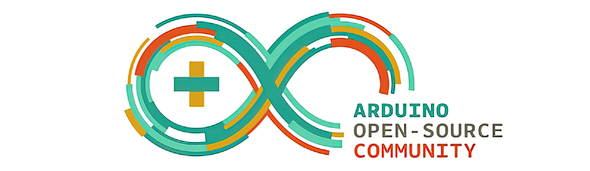

【 BPI-Bit-S2 Development Board 】
Introduce

BPI-Bit-S2 development board is a successor to BPI-Bit, inheriting most of the hardware functions.
IO is compatible with micro:bit and can use most peripheral accessories of micro:bit.
Support Webduino, Arduino, MicroPython & CircuitPython programming environment suitable for STEAM education.
Check the Unboxing Bit-S2 Development Board page for details.
Programming with CircuitPython
It is recommended to use CircuitPython to quickly get started with the BPI-Bit-S2 development board.

CircuitPython is an open source, educational derivative of MicroPython, support and developed by Adafruit Industries.
Comparing ease of use, it goes a step further on the basis of MicroPython.
When the development board running CircuitPython firmware is connected to the PC, the PC will immediately recognize it as a USB storage disk.
And the python script file can be copied to this disk to allow the program to run on the development board.
Modern operating systems and home PCs support USB storage disks, this allows users to use it out of the box.
Of course, in order to use REPL, a serial communication software needs to be installed, or a text editor that supports this function, such as Mu editor.
The CircuitPython community provides an extremely rich peripheral driver library, APIs documentation, and tutorials.
Even if there is no programming foundation, no hardware foundation, you can quickly get started from scratch.
CircuitPython does not support some microcontroller-specific libraries such as timer and hardware interrupt, nor does it support the multi-threaded _thread library. It only provides the asyncio library for writing concurrent code.
The code is very compatible between microcontrollers supported by CircuitPython and single-board computers (SBCs) supported by Blinka. This is thanks to its efforts to unify APIs.
Programming with MicroPython

MicroPython is a lean and efficient implementation of the Python 3 programming language that includes a small subset of the Python standard library and is optimised to run on microcontrollers and in constrained environments.
Crowdfunded and open sourced in 2013 by Damien P. George.
The most obvious difference between it and the use of C programs to develop microcontrollers is that there is no need for lengthy compilation when verifying code.
Using serial communication software, enter commands through the REPL(read-eval-print-loop) to control the microcontroller, just like Python's REPL.
It is also possible to use some tools to upload a python script file to run inside the microcontroller.
Its implementation of Python3 includes the _thread library that supports multithreading and the asyncio library for writing concurrent code.
MicroPython aims to be as compatible with normal Python as possible to allow you to transfer code with ease from the desktop to a microcontroller or embedded system.
At the same time it also has some libraries specific for microcontrollers in order to take full advantage of the hardware features inside the microcontroller chip, such as timers, hardware interrupts, WiFi, etc., depending on the specific hardware.
While having the above features, it is compact enough to fit and run within just 256k of code space and 16k of RAM.
If you know Python you already know MicroPython.
On the other hand, the more you learn about MicroPython the better you become at Python.
Programming with Arduino

Arduino is an open source embedded hardware and software development platform for users to create interactive embedded projects.
The Arduino integrated development environment (IDE) is the software core of this platform, using the C/C++ programming language to develop projects.
The biggest feature of Arduino is to provide a unified API to develop all microcontrollers it supports, with very good code portability and reusability.
In addition, it simplifies the process of building a development environment, and all the development environments of microcontrollers it supports can be installed and configured with a single click.
It also provides simple one-click mechanisms to compile and upload programs to a microcontroller.
Arduino IDE alsoprovides many example codes, supplemented by a large number of comments, which can help users get started quickly.
A large number of excellent open source projects accumulated in the Arduino community are available for reference and learning, and there are quite a few driver libraries and APIs provided by chip manufacturers as well.
Programming with Webduino
BPI-Bit-S2 has Webduino firmware installed before delivery.
webduino online building block programming platform
webduino building block programming platform Windows installation version
webduino online teaching manual
Materials and Resources
[Official WIKI](https://wiki.banana-pi.org/BPI-Bit-S2_STEAM_%E6%95%99%E8%82%B2%E5%BC%80%E5%8F%91%E6% 9D%BF)
[GitHub: BPI-BPI-Bit-S2 Development Board Schematic PDF](https://github.com/BPI-STEAM/BPI-BIT-Lite-Doc/blob/main/sch/BPI-BIT-Lite- V0.2.pdf)
Sample Purchase
OEM&OEM customized service: sales@banana-pi.com